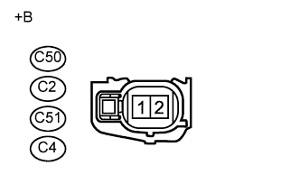

СИСТЕМА SFI > Цепь топливной форсунки |

| 1.ПРОВЕРЬТЕ ТОПЛИВНУЮ ФОРСУНКУ В СБОРЕ (ПИТАНИЕ) |
|  |
Отсоедините разъемы топливных форсунок.
Измерьте напряжение в соответствии со значениями, приведенными в таблице.
| Контакты для подключения диагностического прибора | Положение переключателя | Заданные условия |
| C50-2 - масса | Зажигание включено | 11 – 14 В |
| C2-2 - масса | Зажигание включено | 11 – 14 В |
| C51-2 - масса | Зажигание включено | 11 – 14 В |
| C4-2 - масса | Зажигание включено | 11 – 14 В |
| *a | Вид спереди разъема со стороны жгута проводов: (к топливной форсунке в сборе) |
Выключите зажигание.
Подсоедините разъемы топливных форсунок.
|
| ||||
| OK | |
| 2.ПРОВЕРЬТЕ ТОПЛИВНУЮ ФОРСУНКУ В СБОРЕ |
Проверьте топливную форсунку (Нажмите здесь).
|
| ||||
| OK | |
| 3.ПРОВЕРЬТЕ ЖГУТ ПРОВОДОВ И РАЗЪЕМ (ТОПЛИВНАЯ ФОРСУНКА В СБОРЕ - ЕСМ) |
Отсоедините разъемы топливных форсунок.
Отсоедините разъем ЭБУ.
Измерьте сопротивление в соответствии со значениями, приведенными в таблице ниже.
| Контакты для подключения диагностического прибора | Режим | Заданные условия |
| C50-1 - C64-6 (#10) | Всегда | Менее 1 Ом |
| C2-1 - C64-7 (#20) | Всегда | Менее 1 Ом |
| C51-1 - C64-8 (#30) | Всегда | Менее 1 Ом |
| C4-1 - C64-9 (#40) | Всегда | Менее 1 Ом |
| Контакты для подключения диагностического прибора | Режим | Заданные условия |
| C50-1 или C64-6 (#10) - масса | Всегда | 10 кОм или более |
| C2-1 или C64-7 (#20) - масса | Всегда | 10 кОм или более |
| C51-1 или C64-8 (#30) - масса | Всегда | 10 кОм или более |
| C4-1 или C64-9 (#40) - масса | Всегда | 10 кОм или более |
Подсоедините разъемы топливных форсунок.
Подсоедините разъем ECM.
|
| ||||
| OK | ||
| ||
| 4.ПРОВЕРЬТЕ ЖГУТ ПРОВОДОВ И РАЗЪЕМ (ИНТЕГРИРОВАННОЕ РЕЛЕ [РЕЛЕ IG2] - ТОПЛИВНАЯ ФОРСУНКА В СБОРЕ) |
Отсоедините разъемы топливных форсунок.
Извлеките интегрированное реле (реле IG2) из блока реле моторного отсека.
Отсоедините разъем интегрированного реле.
Измерьте сопротивление в соответствии со значениями, приведенными в таблице ниже.
| Подключение диагностического прибора | Условие | Заданные условия |
| C50-2 - 1A-4 | Всегда | Менее 1 Ом |
| C2-2 - 1A-4 | Всегда | Менее 1 Ом |
| C51-2 - 1A-4 | Всегда | Менее 1 Ом |
| C4-2 - 1A-4 | Всегда | Менее 1 Ом |
| Подключение диагностического прибора | Условие | Заданные условия |
| C50-2 или 1A-4 - масса | Всегда | 10 кОм или более |
| C2-2 или 1A-4 - масса | Всегда | 10 кОм или более |
| C51-2 или 1A-4 - масса | Всегда | 10 кОм или более |
| C4-2 или 1A-4 - масса | Всегда | 10 кОм или более |
Подсоедините разъем топливной форсунки.
Установите интегрированное реле на место.
Подсоедините разъем интегрированного реле.
|
| ||||
| OK | ||
| ||